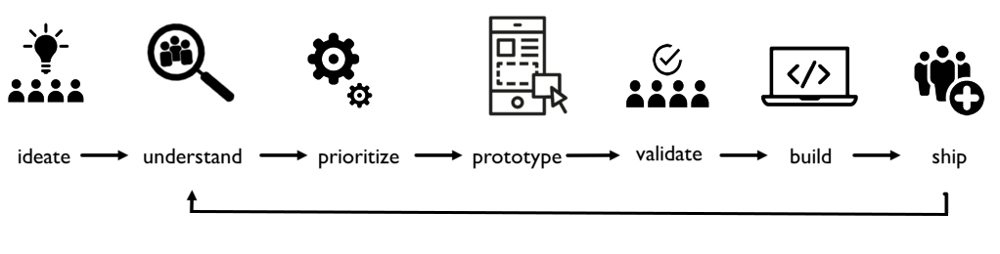

Our Mission
BU Spark! is an initiative to support student-driven innovation in computer science,
engineering, and related disciplines. Housed at Boston University’s Hariri Institute for Computing, BU Spark aims to help students realize their potential by providing access to resources, knowledge, and expert networks to support their innovation journeys.
"BU Spark! gave me the tools, knowledge, and skills I needed to pursue my passion for technology and dance. The team at BU Spark! is incredibly supportive, passionate, and fun to work with."

Begin your Innovation Journey
In a prestigious university setting like Boston University, there is no shortage of good ideas. Through BU Spark!, you can engage with fellow students to take their innovations to the next level or complete projects on behalf of an external partner.
Start a Project
Maybe you have an idea for an innovative new app for students. Perhaps you are pondering the possibility of creating a technology product to help those in need. Regardless if it helps 10 or 10,000 people, BU Spark! will strive to help realize your ideas.
Fellowship Program
The Fellowship program aims to provide you with a collaborative co-working space, access to mentors, and skill building to help ignite your ideas. A limited number of paid internships are available each semester for the Fellowship program, so sign up today!
Learn More
CS491: BU Spark! Innovation Ventures
BU Spark! Innovation Ventures aims to provide a structured process and technical support for students to work independently to advance an original venture project of their own creation. The self-directed study will be accompanied by instructional components that will cover key topics relevant to product development, including user-centered design and project management. Students applying to this course must have a project concept in mind, or already in development, as well as the technical skills to execute on their vision.
Learn More
Join a Project
Sometimes, the best way to learn is through experience. BU Spark! is driven to provide you a comprehensive, hands-on approach in pursuing technology projects.
 Spark! X-Lab
Spark! X-Lab
BU Spark! hosts experiential learning courses that are designed to match you with a project and teach you the skills necessary to see that project come to life.
Learn More